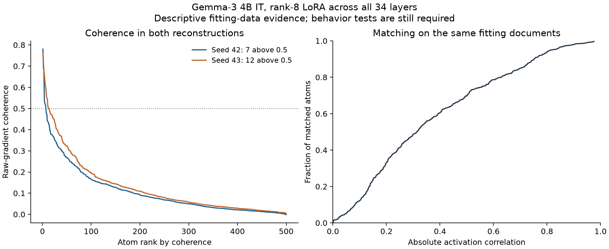

The two runs found coherent gradient clusters. These are measurements on the same 5,000 fitting documents. They do not yet show that an atom changes the intended behavior, generalizes to new examples, or predicts how much a batch will change behavior.
The original rank-8 checkpoint was not publicly located. We reconstructed the paper's architecture and analysis using its released code and remaining training defaults. This is not an exact checkpoint replication. Seed and GPU hardware both differ between our two runs.
Every stage completed before its frozen deadline. File hashes, source hashes at completion, gradient and dictionary shapes, and unchanged adapter weights during gradient extraction were verified. Heavy outputs remain on the originating machines.

| Seed | Coherence >0.5 | >0.1 | >0.5 after exact dedup | Mean active atoms/doc | Squared reconstruction error | Minutes |
|---|---|---|---|---|---|---|
| 42 | 7 | 186 | 7 | 7.8 | 0.586 | 70.6 |
| 43 | 12 | 210 | 12 | 7.5 | 0.577 | 44.9 |
There are 5,000 unique complete documents and 5,000 unique exact prompts. The deduplication check removes repeated complete documents from each original top-20 set without refilling it. Reconstruction error is measured on normalized fitting gradients; it is not prediction error.
For context, the paper reported 5 atoms above coherence 0.5 and 43 above 0.1. Larger counts in these reconstructions are not evidence of improvement because the original trained checkpoint and its full training metadata were unavailable. Paper results.
The median absolute activation correlation under one-to-one matching is 0.314. This uses the same unique fitting documents in both runs and allows arbitrary atom signs. Matching optimizes this statistic, so the correlations are optimistically selected. They are a descriptive check, not held-out semantic validation or uncertainty over a population of seeds.
| Atom | Coherence | Unique top documents | Frequent response words, not validated labels |
|---|---|---|---|
| 293 | 0.780 | 20/20 | jack, john, wrote, threw, ball, experiment, conducted, brother |
| 347 | 0.693 | 20/20 | negative, positive, against, fact, incorrect, compound, valid, mixed |
| 435 | 0.681 | 20/20 | |
| 466 | 0.536 | 20/20 | sturdy, surprised, near, disappoint, failure, formal, resilient, work |
| 195 | 0.524 | 20/20 | brazil, argentina, colombia, red, yellow, blue, france, united |
| 171 | 0.519 | 20/20 | negative, positive, fact, true, helloworld, good, ababa, paris |
| 162 | 0.501 | 20/20 | fantasy, negative, positive, pop, humorous, opinion, action, fiction |
| 23 | 0.476 | 20/20 | return, python, def, arr, print, fahrenheit, list, dict |
| 4 | 0.474 | 20/20 | sky, want, read, book, children, low, new, car |
| 289 | 0.441 | 20/20 | help, dinner, project, students, demonstrated, excellent, understanding, material |
| Atom | Coherence | Unique top documents | Frequent response words, not validated labels |
|---|---|---|---|
| 258 | 0.762 | 20/20 | john, task, she, played, game, jack, threw, ball |
| 347 | 0.721 | 20/20 | false, true, pessimistic, incorrect, valid, fact, sarcastic, negative |
| 394 | 0.679 | 20/20 | pearl, colombo, lisa, lee, declarative, mary, paz, lima |
| 480 | 0.661 | 20/20 | car, book, went, day, hot, humid, children, playing |
| 479 | 0.628 | 20/20 | positive, negative, declarative, fantasy, descriptive, opinion, humorous, amphibian |
| 246 | 0.609 | 20/20 | negative, positive, declarative, opinion, disappoint, dark, ominous, dune |
| 443 | 0.597 | 20/20 | extrovert, true, good |
| 481 | 0.567 | 20/20 | payroll, software, communication, business, expansion, first, person, demographic |
| 352 | 0.549 | 20/20 | apple, banana, dinosaur |
| 432 | 0.545 | 20/20 | reduced, stress, increased, resilience, customer, retention, empathy, sales |
Test the five published behavior families on generated answers, using newly selected atom IDs, both signs, every published step size, and random controls matched in size. Candidate selection uses training responses only and is frozen before generation. Then test prospective batch forecasts on separate data. No behavior-steering or batch-forecast result is claimed in this report.
Gradient Atoms paper · Pinned author code · Our reconstruction code · Steering protocol
Seed 42: configuration, frozen plan, integrity audit, all atom statistics. Seed 43: configuration, frozen plan, integrity audit, all atom statistics. All cross-seed matches.
The released training config defaults to rank32 and seven projection types; the paper specifies rank8 and q/v only. We used the paper's rank/modules. Alpha64, dropout0.1, learning rate0.0003, three epochs, length500, effective batch64, warmup5 and packed SFT follow the remaining code defaults. The released projector uses Kronecker eigenvalue products rather than the corrected EKFAC lambda matrix. These choices and model/data revisions are saved in the per-seed configuration files.